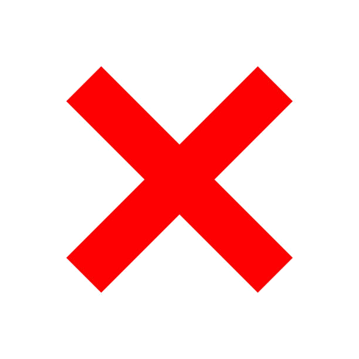

Map
The action of the game takes place on the map. It looks like this
Description of icons on the map:
 Your headquarters
Your headquarters
 Another boss' headquarters
Another boss' headquarters
 Available mission
Available mission
 Mission performing by your agent
Mission performing by your agent
 Exposed ambush
 Your ambush
Your ambush
Below the map you can see buttons that can be used to perform some agent actions
You can move around the map by pressing the black arrows.
"Edge" indicates the location of the upper left corner in the game world.